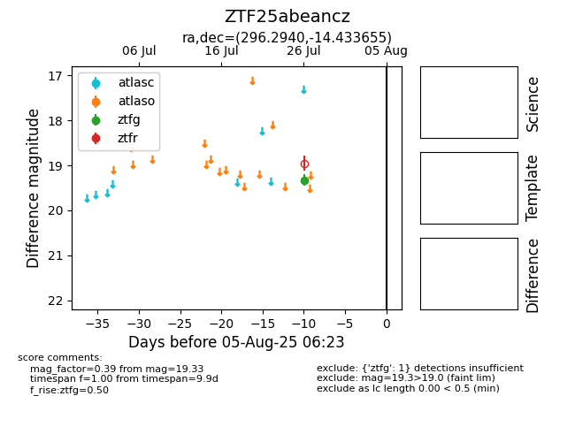

Target ZTF25abeancz at 2025-08-05 23:02, see:
FINK: fink-portal.org/ZTF25abeancz
Lasair: lasair-ztf.lsst.ac.uk/objects/ZTF25abeancz
ALeRCE: alerce.online/object/ZTF25abeancz
alt names
ZTF25abeancz (ztf,fink)
coordinates:
equatorial (ra, dec) = (296.2940,-14.43365)
galactic (l, b) = (25.7172,-18.29478)
photometry
last ztfg=19.33
1 ztfg detections
